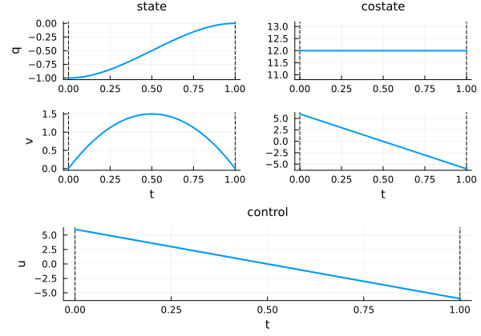
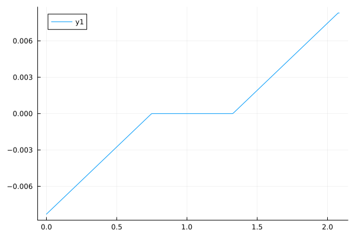
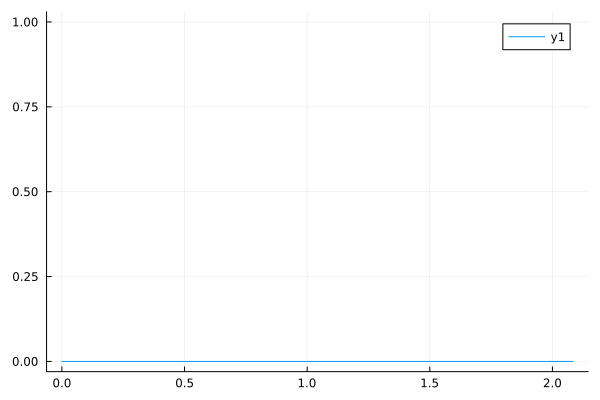

The optimal control solution object: structure and usage
In this manual, we'll first recall the main functionalities you can use when working with a solution of an optimal control problem. This includes essential operations like:
- Plotting a solution: How to plot the optimal solution for your defined problem.
- Printing a solution: How to display a summary of your solution.
After covering these core functionalities, we'll delve into the structure of a solution. Since a solution is structured as a OptimalControl.Solution struct, we'll first explain how to access its underlying attributes. Following this, we'll shift our focus to the simple properties inherent to a solution.
Content
Main functionalities
Let's define a basic optimal control problem.
using OptimalControl
t0 = 0
tf = 1
x0 = [-1, 0]
ocp = @def begin
t ∈ [ t0, tf ], time
x = (q, v) ∈ R², state
u ∈ R, control
x(t0) == x0
x(tf) == [0, 0]
ẋ(t) == [v(t), u(t)]
0.5∫( u(t)^2 ) → min
endWe can now solve the problem (for more details, visit the solve manual):
using NLPModelsIpopt
sol = solve(ocp)▫ This is OptimalControl 2.0.2, solving with: collocation → adnlp → ipopt (cpu)
📦 Configuration:
├─ Discretizer: collocation
├─ Modeler: adnlp
└─ Solver: ipopt
▫ This is Ipopt version 3.14.19, running with linear solver MUMPS 5.8.2.
Number of nonzeros in equality constraint Jacobian...: 1754
Number of nonzeros in inequality constraint Jacobian.: 0
Number of nonzeros in Lagrangian Hessian.............: 250
Total number of variables............................: 752
variables with only lower bounds: 0
variables with lower and upper bounds: 0
variables with only upper bounds: 0
Total number of equality constraints.................: 504
Total number of inequality constraints...............: 0
inequality constraints with only lower bounds: 0
inequality constraints with lower and upper bounds: 0
inequality constraints with only upper bounds: 0
iter objective inf_pr inf_du lg(mu) ||d|| lg(rg) alpha_du alpha_pr ls
0 5.0000000e-03 1.10e+00 2.24e-14 0.0 0.00e+00 - 0.00e+00 0.00e+00 0
1 6.0000960e+00 2.22e-16 1.78e-15 -11.0 6.08e+00 - 1.00e+00 1.00e+00h 1
Number of Iterations....: 1
(scaled) (unscaled)
Objective...............: 6.0000960015360381e+00 6.0000960015360381e+00
Dual infeasibility......: 1.7763568394002505e-15 1.7763568394002505e-15
Constraint violation....: 2.2204460492503131e-16 2.2204460492503131e-16
Variable bound violation: 0.0000000000000000e+00 0.0000000000000000e+00
Complementarity.........: 0.0000000000000000e+00 0.0000000000000000e+00
Overall NLP error.......: 1.7763568394002505e-15 1.7763568394002505e-15
Number of objective function evaluations = 2
Number of objective gradient evaluations = 2
Number of equality constraint evaluations = 2
Number of inequality constraint evaluations = 0
Number of equality constraint Jacobian evaluations = 2
Number of inequality constraint Jacobian evaluations = 0
Number of Lagrangian Hessian evaluations = 1
Total seconds in IPOPT = 3.549
EXIT: Optimal Solution Found.You can export (or save) the solution in a Julia .jld2 data file and reload it later, and also export a discretised version of the solution in a more portable JSON format. Note that the optimal control problem is needed when loading a solution.
See the two functions:
To print sol, simply:
sol• Solver:
✓ Successful : true
│ Status : first_order
│ Message : Ipopt/generic
│ Iterations : 1
│ Objective : 6.000096001536038
└─ Constraints violation : 2.220446049250313e-16
• Boundary duals: [12.000192003072058, 6.0000960015360265, -12.000192003072058, 6.000096001536031]
For complementary information, you can plot the solution:
using Plots
plot(sol)
For more details about plotting a solution, visit the plot manual.
Solution struct
The solution sol is a OptimalControl.Solution struct.
CTModels.OCP.Solution — Type
struct Solution{TimeGridModelType<:CTModels.OCP.AbstractTimeGridModel, TimesModelType<:CTModels.OCP.AbstractTimesModel, StateModelType<:CTModels.OCP.AbstractStateModel, ControlModelType<:CTModels.OCP.AbstractControlModel, VariableModelType<:CTModels.OCP.AbstractVariableModel, ModelType<:CTModels.OCP.AbstractModel, CostateModelType<:Function, ObjectiveValueType<:Real, DualModelType<:CTModels.OCP.AbstractDualModel, SolverInfosType<:CTModels.OCP.AbstractSolverInfos} <: CTModels.OCP.AbstractSolutionComplete solution of an optimal control problem.
Stores the optimal state, control, and costate trajectories, the optimisation variable value, objective value, dual variables, and solver information.
Fields
time_grid::TimeGridModelType: Discretised time points.times::TimesModelType: Initial and final time specification.state::StateModelType: State trajectoryt -> x(t)with metadata.control::ControlModelType: Control trajectoryt -> u(t)with metadata.variable::VariableModelType: Optimisation variable value with metadata.model::ModelType: Reference to the optimal control problem model.costate::CostateModelType: Costate (adjoint) trajectoryt -> p(t).objective::ObjectiveValueType: Optimal objective value.dual::DualModelType: Dual variables for all constraints.solver_infos::SolverInfosType: Solver statistics and status.
Example
julia> using CTModels
julia> # Solutions are typically returned by solvers
julia> sol = solve(ocp, ...) # Returns a Solution
julia> CTModels.objective(sol)Each field can be accessed directly (sol.state, etc) but we recommend to use the sophisticated getters we provide: the state(sol::Solution) method does not return sol.state but a function of time that can be called at any time, not only on the grid time_grid.
0.25 ∈ time_grid(sol)falsex = state(sol)
x(0.25)2-element Vector{Float64}:
-0.8437454999279995
1.124993999904You can also retrieve the original optimal control problem from the solution:
model(sol) # returns the original OCP modelAbstract definition:
t ∈ [t0, tf], time
x = ((q, v) ∈ R², state)
u ∈ R, control
x(t0) == x0
x(tf) == [0, 0]
ẋ(t) == [v(t), u(t)]
0.5 * ∫(u(t) ^ 2) → min
The (autonomous) optimal control problem is of the form:
minimize J(x, u) = ∫ f⁰(x(t), u(t)) dt, over [0, 1]
subject to
ẋ(t) = f(x(t), u(t)), t in [0, 1] a.e.,
ϕ₋ ≤ ϕ(x(0), x(1)) ≤ ϕ₊,
where x(t) = (q(t), v(t)) ∈ R² and u(t) ∈ R.
API Reference by Component
This section provides a comprehensive reference of all methods available for inspecting and querying optimal control solutions. Methods are organized by component for easy navigation.
Trajectories
The trajectory component provides access to the state, control, variable, and costate trajectories.
State trajectory
Get the state trajectory as a function of time:
x = state(sol) # returns a function of time#_wrap_scalar_and_deepcopy##2 (generic function with 1 method)Evaluate the state at any time (not just grid points):
t = 0.25
x(t) # returns state vector at t=0.252-element Vector{Float64}:
-0.8437454999279995
1.124993999904The state function can be evaluated at any time within the problem horizon, even if it's not a discretization grid point:
0.25 ∈ time_grid(sol) # false: not a grid pointfalsex(0.25) # still works: interpolated value2-element Vector{Float64}:
-0.8437454999279995
1.124993999904Control trajectory
Get the control trajectory as a function of time:
u = control(sol) # returns a function of time#_wrap_scalar_and_deepcopy##0 (generic function with 1 method)u(t) # returns control value at t3.0000480007680177Variable values
Get the optimization variable values:
v = variable(sol) # returns an empty vector if no variableFloat64[]Costate trajectory
Get the costate (adjoint) trajectory as a function of time:
p = costate(sol) # returns a function of time#_wrap_scalar_and_deepcopy##2 (generic function with 1 method)p(t) # returns costate vector at t2-element Vector{Float64}:
12.00019200307206
2.976047616761874Time information
Get time-related information from the solution:
time_grid(sol) # returns the discretization time grid251-element Vector{Float64}:
0.0
0.004
0.008
0.012
0.016
0.02
0.024
0.028
0.032
0.036
⋮
0.968
0.972
0.976
0.98
0.984
0.988
0.992
0.996
1.0times(sol) # returns the TimesModel struct containing time informationCTModels.OCP.TimesModel{CTModels.OCP.FixedTimeModel{Int64}, CTModels.OCP.FixedTimeModel{Int64}}(CTModels.OCP.FixedTimeModel{Int64}(0, "0"), CTModels.OCP.FixedTimeModel{Int64}(1, "1"), "t")Unified vs. multiple grids:
With a standard collocation method, there is a single time grid that can be retrieved via time_grid(sol). The solution internally uses a UnifiedTimeGridModel for memory efficiency.
For discretization methods that use multiple grids (one per component), the solution uses a MultipleTimeGridModel. In this case, you must specify which component's grid you want:
time_grid(sol, :state)— state trajectory and state box constraint dualstime_grid(sol, :control)— control trajectory and control box constraint dualstime_grid(sol, :costate)— costate trajectory (maps to:stategrid)time_grid(sol, :path)— path constraint duals
Aliases are accepted: :costate/:costates map to :state, :dual/:duals map to :path, and plural forms (:states, :controls) are also valid.
All grids must be strictly increasing, finite, and non-empty.
Trajectories (state, control, costate, path_constraints_dual) can be provided either as matrices (rows = time points, columns = components) or as functions t -> vector for interpolated or analytical data.
Summary table
| Method | Returns | Description |
|---|---|---|
state(sol) | Function | State trajectory x(t) |
control(sol) | Function | Control trajectory u(t) |
variable(sol) | Vector | Variable values |
costate(sol) | Function | Costate trajectory p(t) |
time_grid(sol) | Vector{Float64} | Discretization time grid |
times(sol) | TimesModel | TimesModel struct containing time information |
Objective
The objective component provides access to the objective value.
Objective value
Get the optimal objective value:
objective(sol) # returns the objective value6.000096001536038Summary table
| Method | Returns | Description |
|---|---|---|
objective(sol) | Float64 | Objective value |
Dual variables
The dual variables (Lagrange multipliers) provide sensitivity information about constraints.
To illustrate dual variables, we define a problem with various constraints:
ocp = @def begin
tf ∈ R, variable
t ∈ [0, tf], time
x = (q, v) ∈ R², state
u ∈ R, control
tf ≥ 0, (eq_tf)
-1 ≤ u(t) ≤ 1, (eq_u)
v(t) ≤ 0.75, (eq_v)
x(0) == [-1, 0], (eq_x0)
q(tf) == 0
v(tf) == 0
ẋ(t) == [v(t), u(t)]
tf → min
end
sol = solve(ocp; display=false)Dual of labeled constraints
Get the dual variable for a specific labeled constraint:
dual(sol, ocp, :eq_tf) # dual for variable constraint4.8000002513961475e-12dual(sol, ocp, :eq_x0) # dual for boundary constraint2-element Vector{Float64}:
1.3298101221163192
1.0011103794866778For path constraints, the dual is a function of time:
μ_u = dual(sol, ocp, :eq_u)
plot(time_grid(sol), μ_u)
μ_v = dual(sol, ocp, :eq_v)
plot(time_grid(sol), μ_v)
Box constraint duals
Get dual variables for box constraints on state, control, and variable:
state_constraints_lb_dual(sol) # lower bound duals for state#_wrap_scalar_and_deepcopy##0 (generic function with 1 method)state_constraints_ub_dual(sol) # upper bound duals for state#_wrap_scalar_and_deepcopy##0 (generic function with 1 method)control_constraints_lb_dual(sol) # lower bound duals for control#_wrap_scalar_and_deepcopy##0 (generic function with 1 method)control_constraints_ub_dual(sol) # upper bound duals for control#_wrap_scalar_and_deepcopy##0 (generic function with 1 method)variable_constraints_lb_dual(sol) # lower bound duals for variable1-element Vector{Float64}:
4.8000002513961475e-12variable_constraints_ub_dual(sol) # upper bound duals for variable1-element Vector{Float64}:
0.0Nonlinear constraint duals
Get dual variables for nonlinear path and boundary constraints:
path_constraints_dual(sol) # duals for nonlinear path constraints#_wrap_scalar_and_deepcopy##2 (generic function with 1 method)boundary_constraints_dual(sol) # duals for nonlinear boundary constraints4-element Vector{Float64}:
1.3298101221163192
1.0011103794866778
-1.3298101221163192
1.0009448000722094Summary table
| Method | Returns | Description |
|---|---|---|
dual(sol, ocp, label) | Real or Function | Dual for labeled constraint |
state_constraints_lb_dual(sol) | Dual values | State lower bound duals |
state_constraints_ub_dual(sol) | Dual values | State upper bound duals |
control_constraints_lb_dual(sol) | Dual values | Control lower bound duals |
control_constraints_ub_dual(sol) | Dual values | Control upper bound duals |
variable_constraints_lb_dual(sol) | Dual values | Variable lower bound duals |
variable_constraints_ub_dual(sol) | Dual values | Variable upper bound duals |
path_constraints_dual(sol) | Dual values | Nonlinear path constraint duals |
boundary_constraints_dual(sol) | Dual values | Nonlinear boundary constraint duals |
Solution metadata
The solution metadata provides information about the solver performance and status.
Solver status
Check if the solution was successful:
successful(sol) # returns true if solver succeededtrueGet the solver status symbol:
status(sol) # returns solver status (e.g., :first_order):first_orderGet the solver message:
message(sol) # returns solver message string"Ipopt/generic"Iteration count
Get the number of solver iterations:
iterations(sol) # returns iteration count17Constraints violation
Get the maximum constraint violation:
constraints_violation(sol) # returns max violation7.771561172376096e-16Additional solver information
Get additional solver-specific information:
infos(sol) # returns dictionary of solver infoDict{Symbol, Any}()Summary table
| Method | Returns | Description |
|---|---|---|
successful(sol) | Bool | True if solver succeeded |
status(sol) | Symbol | Solver status |
message(sol) | String | Solver message |
iterations(sol) | Int | Number of iterations |
constraints_violation(sol) | Float64 | Maximum constraint violation |
infos(sol) | Dict | Additional solver information |